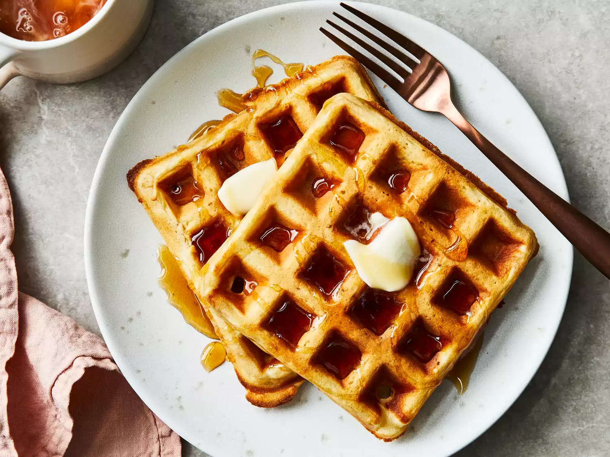

Belgian Waffles

Description
These Belgian waffles are light and fluffy, perfect for breakfast or brunch. They are best served with fresh fruit, whipped cream, or syrup.
Ingredients
- 2 cups all-purpose flour
- 1 teaspoon salt or to taste
- 4 teaspoons baking powder
- 2 tablespoons white sugar
- 2 large eggs
- 1 ½ cups warm milk
- ⅓ cup butter, melted
- 1 teaspoon vanilla extract
Steps
- Gather all ingredients.
- Mix flour, salt, baking powder, and sugar together in a large bowl; set aside. Preheat waffle iron to desired temperature.
- Beat eggs in a separate bowl; stir in milk, butter, and vanilla. Pour milk mixture into flour mixture; beat until blended.
- Ladle batter into a preheated waffle iron. Cook waffles until golden and crisp. Serve immediately and enjoy!
Back to Recipes